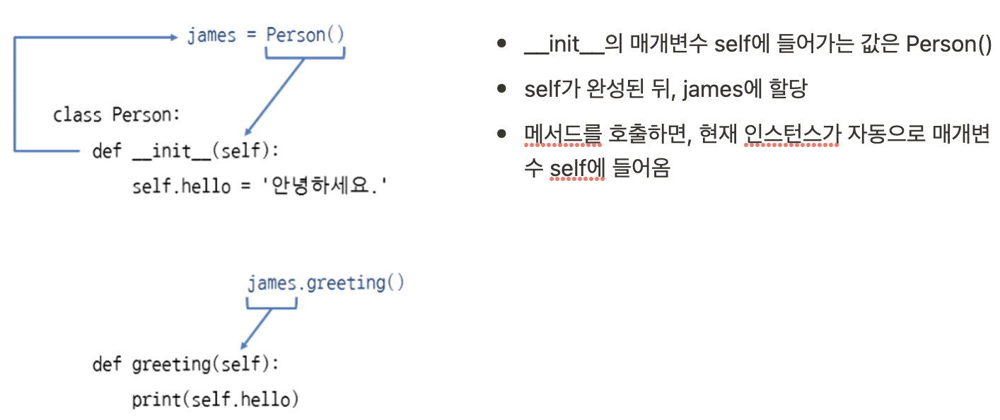
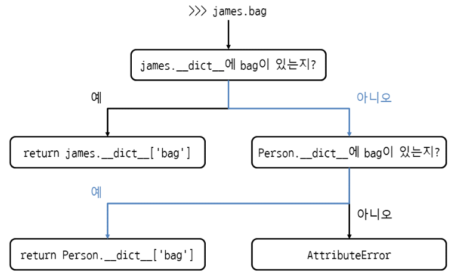
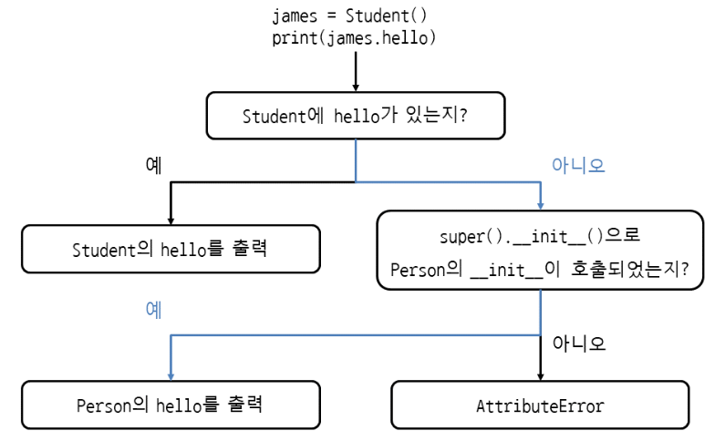

Class¶
- 속성(Attribute) : 요소
- 메서드(Method) : 기능
빈 클래스¶
메서드 안에서 메서드 호출¶
- self.메서드() 형식으로 호출
특정 클래스의 인스턴스인지 확인¶
- 주로 객체의 자료형을 판단할 때 사용
- isinstance(인스턴스, 클래스) : 특정 클래스의 인스턴스가 맞으면 True, 아니면 False
인스턴스 속성¶
__init__메서드 안에서 self.속성에 값을 할당- def init(self): 인스턴스를 만들 때 호출되는 특별한 메서드, 인스턴스 초기화
- 스페셜 메서드(=매직메서드) : __가 붙은 메서드, 파이썬이 자동으로 호출해주는 메서드
Self¶

인스턴스를 만들 때 값 받기¶
- 인스턴스 속성: 인스턴스를 통해 접근하는 속성class Person:
def __init__(self, name, age, address):
# 매개변수를 그대로 self에 넣어서 속성화
self.hello = '안녕하세요.'
self.name = name
self.age = age
self.address = address
def greeting(self):
print('{0} 저는 {1}입니다.'.format(self.hello, self.name))
maria = Person(마리아, 20, '서울시 서초구 반포동')
maria.greeting() # 안녕하세요. 저는 마리아입니다.
# 클래스 바깥에서 속성에 접근할 땐, 인스턴스.속성
print(f"{maria.name}, {maria.age}, {maria.address}")
클래스의 위치 인수, 키워드 인수¶
- 위치 인수
- 키워드 인수
인스턴스를 생성한 뒤에 속성 추가하기 / 특정 속성만 허용하기¶
- 클래스로 인스턴스를 만든 뒤에도,
인스턴스.속성 = 값으로 속성을 계속 추가할 수 있음 -
추가된 속성은 해당 인스턴스에만 생성된 것으로, 다른 인스턴스에서는 생성되지 않음
-
init 메서드가 아닌 다른 메서드에서도 속성 추가 가능 (메서드를 호출해야 속성이 생성됨)
-
인스턴스에 추가할 속성 중, 특정 속성만 허용하고 다른 속성은 제한하고 싶을 때
비공개 속성 (private attribute)¶
클래스 바깥에서는 접근할 수 없고, 클래스 안에서만 사용할 수 있는 속성
- 중요한 값이고, 바깥에서 함부로 바꾸면 안될 때 주로 사용
self.__속성 = 값- 클래스 안의 메서드에서 접근
class Person: def __init__(self, name, age, address, wallet): self.name = name self.age = age self.address = address self.__wallet = wallet def pay(self, amount): if amount > self.__wallet: print('돈이 모자라네...') return self.__wallet -= amount maria = Person('마리아', 20, '서울시 서초구 반포동', 10000) maria.pay(3000)
비공개 메서드¶
class Person:
def __init__(self):
return
def __greeting(self): # 비공개 메서드 생성
print('Hello')
def hello(self):
self.__greeting() # 클래스 안에서는 비공개 메서드 호출 가능
james = Person()
james.__greeting() # Error # 클래스 바깥에서는 비공개 메서드 호출 X
클래스 속성¶
- 클래스 속성은 클래스에 속해 있으며, 모든 인스턴스에서 공유된다
인스턴스 속성¶
class Person:
def __init__(self):
self.bag = []
def put_bag(self, stuff):
self.bag.append(stuff)
james = Person()
james.put_bag('책')
maria = Person()
maria.put_bag('열쇠')
print(james.bag) # ['책']
print(maria.bag) # ['열쇠']
비공개 클래스 속성¶
class knight:
__item_limit = 10 ## 비공개 클래스 속성
def print_item_limit(self):
print(knight.__item__limit) ## 클래스 안에서만 접근할 수 있음
x = knight()
x.print_item_limit() # 10
속성, 메서드 이름을 찾는 순서¶
- 인스턴스, 클래스 순으로 찾는다
- 인스턴스 속성이 없으면 클래스 속성을 찾게 되므로 james.bag, maria.bag도 문제 없이 동작한다
- 겉보기에는 인스턴스 속성을 사용하는 것 같지만 실제로는 클래스 속성
- dict 속성을 출력해보면 현재 인스턴스와 클래스의 속성을 딕셔너리로 확인 가능
- james.bag을 사용했을 때 클래스 속성을 찾는 과정 
클래스와 메서드의 독스트링¶
클래스.__doc__클래스.메서드.__doc__인스턴스.메서드.__doc__
정적 메서드¶
인스턴스를 통하지 않고 클래스에서 바로 호출할 수 있는 메서드
- @staticmethod
- self를 받지 않으므로 인스턴스 속성에 접근 X
- 메서드의 실행이 외부 상태에 영향을 끼치지 않는 순수 함수를 만들 때 사용
(= 인스턴스의 상태를 변화시키지 않는 메서드)
클래스 메서드¶
- @classmethod
- 메서드 안에서 클래스 속성, 클래스 메서드에 접근해야 할 때 사용
- cls를 사용하면, 메서드 안에서 현재 클래스의 인스턴스를 생성할 수 있음
클래스 상속 (Inheritance)¶
물려받은 기능을 유지한 채로 다른 기능을 추가할 때 사용하는 기능
- 같은 종류이자 동등한 관계일 때 사용
- is a 관계 (Student is a Person)
- 기반 클래스 base class (= 부모 클래스, 슈퍼 클래스) : 기능을 물려주는 클래스
- 파생 클래스 derived class (= 자식 클래스, 서브 클래스) : 상속을 받아 새롭게 만드는 클래스
상속 관계 확인¶
issubclass(파생,기반): 기반 클래스의 파생 클래스이면 True, 아니면 False 반환
포함 관계 Has a¶
- 리스트 속성에 Person 인스턴스를 넣어서 관리
- PersonList가 Person을 포함함 = PersonList has a Person
- 같은 종류에 동등한 관계일 때(=is a) 상속 사용
- 그 이외에는 속성에 인스턴스를 넣는 포함 방식(=has a) 사용
기반 클래스의 속성 사용하기¶
Error 예시
- class Person:
def __init__(self):
print('Person __init__')
self.hello = '안녕하세요'
class Student(Person):
def __init__(self):
print('Student __init__')
self.school = '파이썬 코딩 도장'
james = Student()
print(james.school) # Student __init__ # 파이썬 코딩 도장
print(james.hello) ## 기반 클래스의 속성을 출력하고 하면, 에러 발생 (__init__ 메서드가 호출되지 않았기 때문)
super().메서드() : super()를 사용하여 기반 클래스의 메서드 호출
super
- class Person:
def __init__(self):
print('Person __init__')
self.hello = '안녕하세요'
class Student(Person):
def __init__(self):
print('Student __init__')
super().__init__() ## super()로 기반 클래스의 __init__ 메서드 호출
self.school = '파이썬 코딩 도장'
james = Student() # Student __init__ # Person __init__
print(james.school) # 파이썬 코딩 도장
print(james.hello) # 안녕하세요
super(파생클래스, self).메서드() : 현재 클래스가 어떤 클래스인지 명확하게 표시하는 방법
class Student(Person):
def __init__(self):
print('Student __init__')
super(Student, self).__init__() ## super(파생클래스, self)로 기반 클래스의 메서드 호출
self.school = '파이썬 코딩 도장'
기반 클래스의 속성을 찾는 과정¶

기반 클래스를 초기화하지 않아도 되는 경우¶
파생 클래스에서 init 메서드를 생략한다면, 기반 클래스의 init이 자동으로 호출되므로 생략 가능
class Person:
def __init__(self):
print('Person __init__')
self.hello = '안녕하세요'
class Student(Person):
pass
james = Student() # Person __init__
print(james.hello) # 안녕하세요
메서드 오버라이딩¶
파생 클래스에서 기반 클래스의 메서드를 새로 정의하는 것
- 원래 기능을 유지하면서 새로운 기능을 덧붙일 때
- 프로그램에서 어떤 기능이 같은 메서드 이름으로 계속 사용되어야 할 때 활용
다중 상속¶
여러 기반 클래스로부터 상속을 받아 파생 클래스를 만드는 방법
class Person:
def greeting(self):
print('안녕하세요')
class University:
def manage_credit(self):
print('학점 관리')
class Undergraduate(Person, University):
def study(self):
print('공부하기')
james = Undergraduate()
james.greeting() # 안녕하세요 #기반 클래스 Person의 greeting 메서드 호출
james.manage_credit() # 학점 관리 # 기반 클래스 University의 메서드 호출
james.study() # 공부하기 # 기반 클래스 Undergraduate의 메서드 호출
다이아몬드 상속 (죽음의 다이아몬드)¶
- D -> B, C
- B,C -> A
메서드 탐색 순서 MRO (Method Resolution Order)¶
class.mro()- MRO에 따르면, D의 호출 순서는 자기 자신 D 다음이 B이므로 D로 인스턴스를 만들고, greeting을 호출하면 B의 greeting이 호출됨
object 클래스¶
- 모든 클래스의 조상
- 모든 클래스는 object 클래스를 상속받으므로, 기본적으로 object를 생략
- int의 MRO를 출력해보면 int 자기 자신과 object가 출력됨
추상 클래스 (abstract class)¶
메서드의 목록만 가진 클래스, 상속받는 클래스에서 메서드 구현을 강제하기 위해 사용
- 추상 클래스는 인스턴스로 만들 수 없다
- 오로지 상속에만 사용
- 추상 클래스를 상속받았다면, @abstractmethod가 붙은 추상 메서드를 모두 구현
- @abstractmethod
from abc import * class StudentBase(metaclass=ABCMeta): @abstractmethod def study(self): # 추상 메서드는 호출할 일이 없으므로 빈 메서드로 생성 pass @abstractmethod def go_to_school(self): pass class Student(StudentBase): def study(self): print('공부하기') def go_to_school(self): print('학교가기') james = Student() james.study() # 공부하기 james.go_to_school() # 학교가기
덕 타이핑¶
- "만약 어떤 새가 오리처럼 걷고, 헤엄치고, 꽥꽥거리는 소리를 낸다면 나는 그 새를 오리라 부르겠다"에서 유래
- (다른클래스라도) 객체의 적합성은 객체의 실제 유형이 아니라 특정 메소드와 속성의 존재에 의해 결정되는 것 wikidocs
# 오리 클래스를 만들고 quack과 feathers 메서드 정의 class Duck: def quack(self): print('꽥~!') def feathers(self): print('오리는 흰색과 회색 털을 가지고 있습니다.') # 사람 클래스를 만들고 quack과 feathers 메서드 정의 class Person: def quack(self): print('사람은 오리를 흉내냅니다. 꽥~!') def feathers(self): print('사람은 땅에서 깃털을 주워서 보여줍니다.') def in_the_forest(duck): # 덕 타이핑을 사용하는 함수. 클래스의 종류는 상관하지 않음 duck.quack() # quack 메서드와 feathers 메서드만 있으면 duck.feathers() # 함수를 호출할 수 있음 donald = Duck() # 오리 클래스로 donald 인스턴스를 만듦 james = Person() # 사람 클래스로 james 인스턴스를 만듦 in_the_forest(donald) # in_the_forest에 오리 클래스의 인스턴스 donald를 넣음 in_the_forest(james) # in_the_forest에 사람 클래스의 인스턴스 james를 넣음
믹스인 Mix-In¶
- 다른 클래스에서 사용할 수 있도록 공통적인 메서드를 모아 놓은 클래스
- 자체 인스턴스 속성을 가지고 있으며, init 메서드를 구현하지 않음
# 인사하는 메서드는 공통적인 메서드 class HelloMixIn: def greeting(self): print('안녕하세요.') class Person(): def __init__(self, name): self.name = name # HelloMixIn과 Person을 상속받아 학생 클래스를 만듦 class Student(HelloMixIn, Person): def study(self): print('공부하기') # HelloMixIn과 Person을 상속받아 선생님 클래스를 만듦 class Teacher(HelloMixIn, Person): def teach(self): print('가르치기')
What is Dunder? Magic method?¶
Dunder = Double Under(Underscores) = __
- 주로 연산자 오버로딩(operator overloading)에 사용
dir(int)-> int의 Dunder 리스트 확인 가능
Initialization and Construction
- new: To get called in an object’s instantiation
- init: To get called by the new method
- del: It is the destructor
Numeric magic methods
- trunc(self): Implements behavior for math.trunc()
- ceil(self): Implements behavior for math.ceil()
- floor(self): Implements behavior for math.floor()
- round(self,n): Implements behavior for the built-in round()
- ...
Arithmetic operators
- add(self, other): Implements behavior for math.trunc()
- mul(self, other): Implements behavior for math.floor()
- floordiv(self, other): Implements behavior for the built-in round()
String Magic Methods
- str(self): Defines behavior for when str() is called on an instance of your class.
- repr(self): To get called by built-int repr() method to return a machine readable
- ...
Comparison magic methods
- eq(self, other): Defines behavior for the equality operator, ==.
- gt(self, other): Defines behavior for the greater-than operator, >.
- ...
What's the difference method vs function?¶
Method와 Function은 그 기능이 비슷하나, Method는 Object/Class와 연관이 있다는 것.
따라서 호출된 개체에 대해 암시적으로 사용되며 클래스 내에 포함된 데이터에 액세스할 수 있다는 점에서 차이를 보인다
- The method is implicitly used for an object for which it is called
- The method is accessible to data that is contained within the class